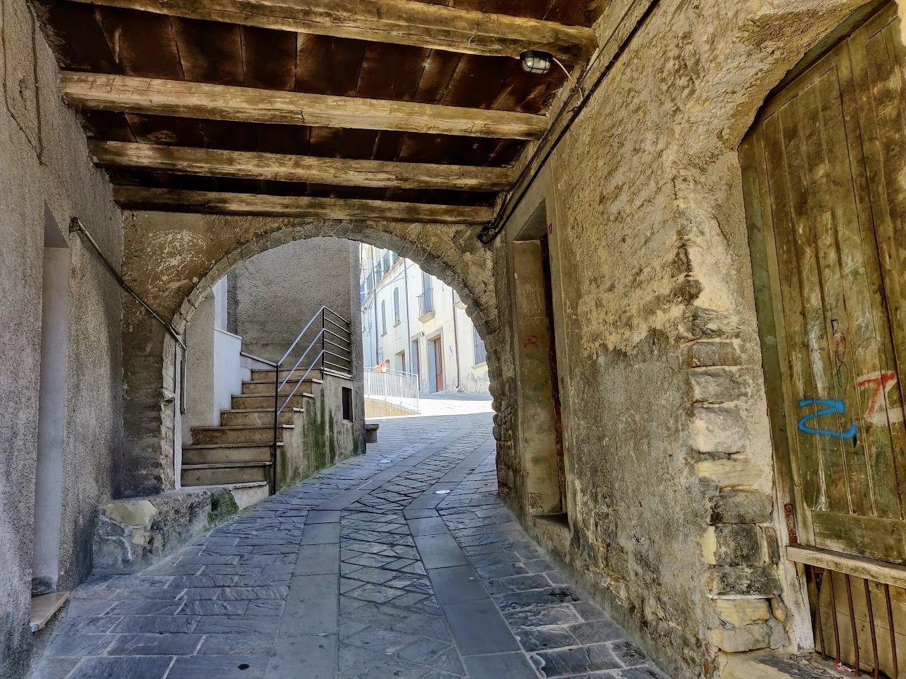
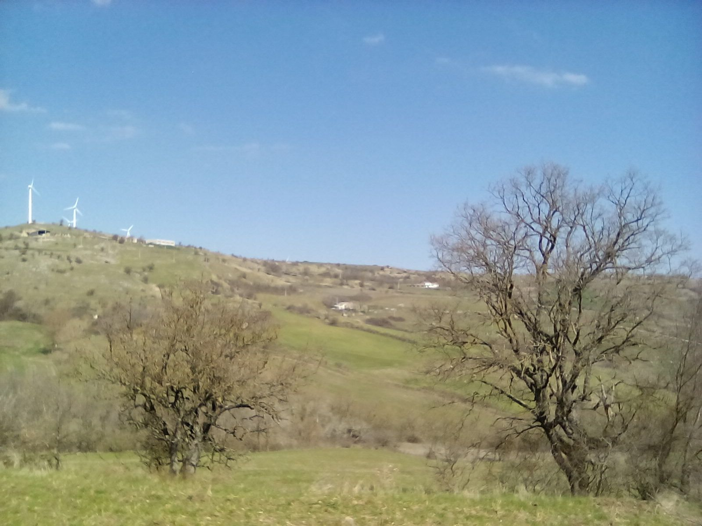
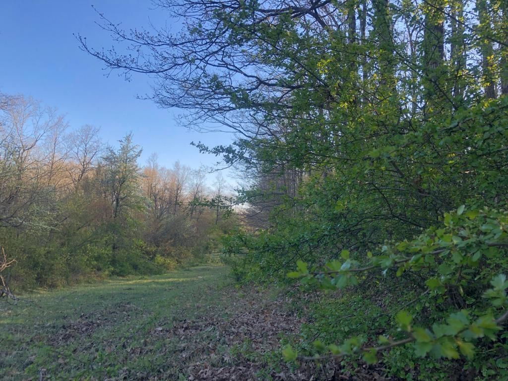
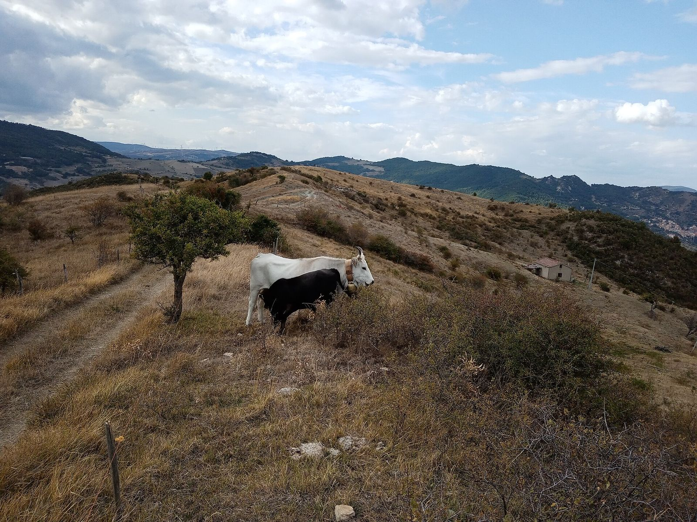
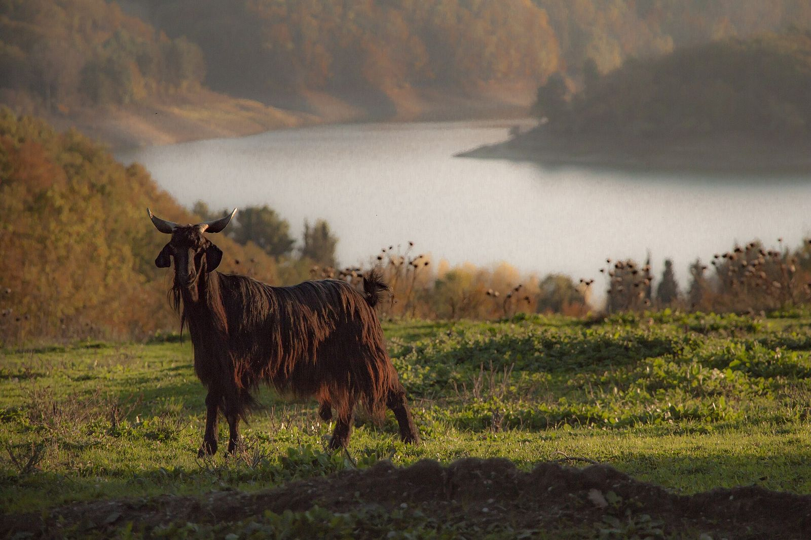
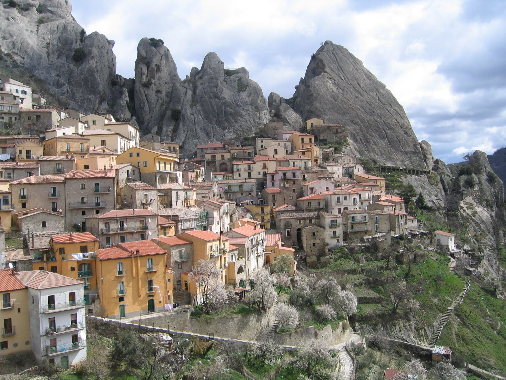

Sei camere in pietra
Una masseria di fine Ottocento, rimessa a posto con la stessa pietra e lo stesso legno, in mezzo a trenta ettari di cerri e ulivi.

Ogni camera ha il bagno, il riscaldamento a pavimento e una finestra sul bosco. Niente televisione: la sera c’è il camino in sala, e il cielo è buio davvero.
780 msul livello del mare, in mezzo ai cerri
- Da Potenza
- 25 km
- Aperto
- tutto l’anno
- Colazione
- 8:00–10:00
- Camere
- sei, tutte con bagno

Camere e tavola
Prezzi in euro, IVA inclusa. Tassa di soggiorno esclusa.
Le camere
A notte, colazione inclusa.
- Doppia del bosco€ 75letto matrimoniale, bagno, vista sui cerri
- Doppia con terrazzino€ 85affaccio sulla valle
- Familiare€ 110fino a 4 persone, due ambienti
- Suite del fienile€ 130camino e vasca
A tavola
Solo su prenotazione, anche per chi non dorme da noi.
- Menù del bosco€ 35antipasti, due primi, secondo, dolce
- Pranzo della domenica€ 30con la pasta fatta a mano
- Menù bambini€ 15fino a 10 anni
- Vino della casa€ 12bottiglia
Da portare a casa
- Olio extravergine€ 12bottiglia da 0,75 l
- Soppressata€ 9circa 300 g
- Marmellata di fichi€ 5
- Miele di castagno€ 8
ven 19:30–22:30
sab 12:30–14:30, 19:30–22:30
dom 12:30–14:30
Orari della cucina. Le camere sono aperte tutto l’anno.
Intorno alla masseria
9 foto




Domande
- Contrada Cerreta 4, 85000 Borgofiorito (PZ)
- ven 19:30–22:30, sab 12:30–14:30, 19:30–22:30, dom 12:30–14:30
- Uscita Borgofiorito dalla Basentana, poi 2 km di strada bianca
Si può venire solo a mangiare?
Sì, su prenotazione, il venerdì sera e nel fine settimana. Chiamateci almeno il giorno prima.
Accettate animali?
Sì, cani di piccola e media taglia, nella doppia del bosco e nella familiare. Avvisateci quando prenotate.
Come si arriva?
Dalla Basentana uscite a Borgofiorito e seguite le indicazioni per la masseria: gli ultimi 2 km sono di strada bianca, si fanno con qualsiasi auto.
C’è il wifi?
Sì, in sala e nelle camere. Il telefono prende bene quasi ovunque.
Fate pranzi per comunioni e compleanni?
Sì, fino a 50 persone in sala e 80 sotto il pergolato da maggio a settembre.
Come si disdice?
Gratis fino a 7 giorni prima. Dopo, tratteniamo la prima notte.
Come arrivare
Contrada Cerreta 4, 85000 Borgofiorito (PZ)
Orari qui sotto| ven | 19:30–22:30 |
|---|---|
| sab | 12:30–14:30, 19:30–22:30 |
| dom | 12:30–14:30 |